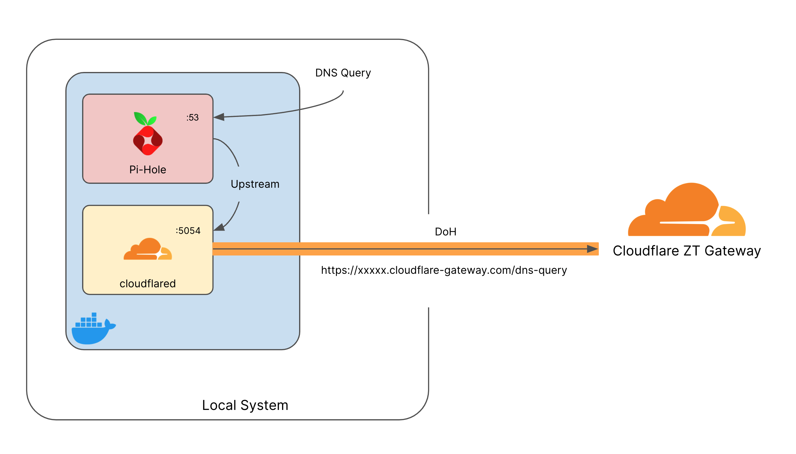

4. Cloudflare Zero Trust Gateway
Welcome to Lab 4 at Cloudflare Connect 2022 - This lab will focus on setting up a simple DNS forwarder to leverage Cloudflare Zero Trust Gateway’s DNS filtering on any network. By the end of this lab you will have:
Setup Cloudflare Tunnel as a DoH (DNS over HTTPS) Forwarder
Configured DNS based filtering in Cloudflare ZT Gateway
Built a ready to deploy Docker Compose file to deploy setup anywhere
Cloudflare Zero Trust Gateway is designed to keep your data safe from malware, ransomware, phishing, command & control, Shadow IT, and other Internet risks over all ports and protocols. Today we will only be setting up DNS based filtering but it can be used as a full Secure Web Gateway.
Learn More about Cloudflare Zero Trust Gateway!
Check out the Cloudflare Homepage to learn more
4.1. Setup Docker Environment
For flexible deployment we will be building this entire setup using Docker. Containers are an easy way build and deploy services on varying platforms - this means you can take the setup you build today on your local system and migrate it to a local home or lab environment with almost no configuration changes.
4.1.1. MacOS
To install Docker on MacOS we will again use brew if you have not already setup brew on your MacBook jump up to the MacOS setup section and install it.
Once Brew is installed, in a terminal window enter:
brew cask install docker
Once installed validate that Docker is installed and running:
docker --version
No Version?
If you do not see a Docker version or the command errors you may need to start the Docker application first, this can be done by launching it from Application or Spotlight on your MacOS device.
4.1.2. Linux
Installation of the Docker can be done with the built in package managers on most all linux distributions - to cover common use cases the steps below are for Debian and CentOS
Debian, Ubuntu Linux, Raspberry Pi OS (apt)
Update apt packages
sudo apt-get update
sudo apt-get install \
ca-certificates \
curl \
gnupg \
lsb-release
Add the Docker GPG Key
curl -fsSL https://download.docker.com/linux/debian/gpg | sudo gpg --dearmor -o /usr/share/keyrings/docker-archive-keyring.gpg
Add the stable repo
echo \
"deb [arch=$(dpkg --print-architecture) signed-by=/usr/share/keyrings/docker-archive-keyring.gpg] https://download.docker.com/linux/debian \
$(lsb_release -cs) stable" | sudo tee /etc/apt/sources.list.d/docker.list > /dev/null
Install Docker Engine
sudo apt-get update
sudo apt-get install docker-ce docker-ce-cli containerd.io docker-compose-plugin
Once installed validate that Docker is installed and running:
docker --version
Fedora, CentOS, Red Hat Enterprise Linux (dnf)
Add the stable repo
sudo dnf -y install dnf-plugins-core
sudo dnf config-manager \
--add-repo \
https://download.docker.com/linux/fedora/docker-ce.repo
Install Docker Engine
sudo dnf install docker-ce docker-ce-cli containerd.io docker-compose-plugin
Once installed validate that Docker is installed and running:
docker --version
4.1.3. Windows
Installation of Docker can be done with powershell winget package manager. Open PowerShell and enter the following installation command:
winget install docker.dockerdesktop
If prompted enter Y to approve installation
Follow the onscreen prompts to complete installation
Install Prompts
If you get prompted to choose the type of installation the easiest method is to select “WSL2” - this will use Windows Subsystem for Linux to setup Docker environment
Once installed Launch docker application from desktop icon and validate that Docker is installed and running via powershell:
docker --version
Docker Setup Complete!
You have successfully setup Docker! Lets Get Started Deploying Cloudflare ZT Gateway!
4.2. Setup Docker Compose File
With Docker running we can now pull down the template Docker Compose file that will allow us to quickly deploy a local DNS server (pi-hole) and Cloudflare DoH forwarder (Cloudflare tunnel) together.
Clone the repo that contains the Docker compose file
gh repo clone cf-tme/connect_2022_lab4
Move into the Directory that was just cloned
cd connect_2022_lab4
Once in the directory you should see a docker-compose.yml file open this file in your favorite text editor
Text Editor
VS Code is a versatile text editor that can be launched directly from the terminal using code
With the file open lets take a moment to break it down and understand it, The file is split up into two logical sections, one for each service we will be starting up
Pi-Hole Service
cloudflared Service
We will be using Pi-Hole as the local dns resolver, for those unfamiliar with Pi-Hole, it is a powerful dns server designed to sinkhole common ad serving domains to create a cleaner and browsing experience for all connected devices.
Learn More!
To learn more about Pi-Hole check out the website
Pi hole is designed to be run on the Raspberry-Pi hardware platform but since we are building it in a container it can easily be ported to whatever platform you like.
In order for Pi-hole to resolve internet domains it will need to be configured with an upstream DNS server to resolve internet domain names - this is where the cloudflard service comes into play.
The cloudfalred service will act as an upstream resolver for Pi-Hole and use Cloudflare ZT Gateway (via DNS over HTTPS) to resolve internet domains - this means that not only are our internet DNS queries encrypted and secure, we can also customize policies on what kinds of traffic is allowed.
The below diagram will help visualize the traffic flow

Based on this you can see that once everything is done, the docker host will be the primary DNS server for the network.
4.2.1. Modify Docker Compose file
Take a closer look at the configuration in the Docker Compose file and read the comments to understand whats happening
Additional Setup
If you are note brought directly into the Zero Trust Dashboard - you may have to go through the intial setup setups - be sure to choose the FREE plan when selecting a tier, once complete you should be brought to the above page